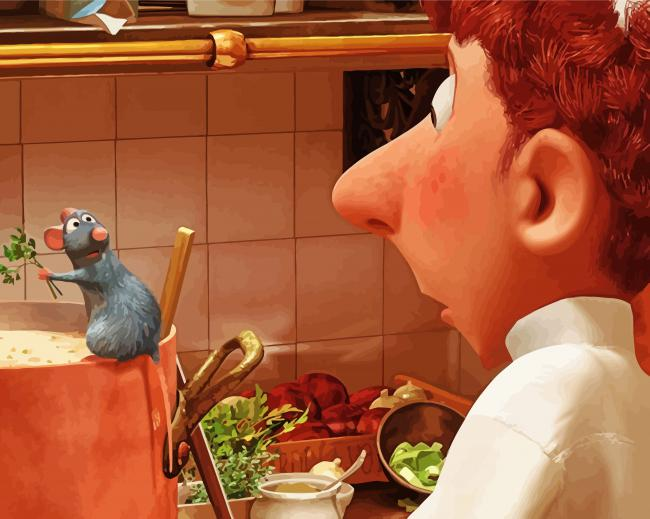

If you've ever seen the movie Ratatouille, you'd know that even a rat can cook. For the sake of example, we will now be transformed into rats. Lets show those Italians that us rats can cook!
Once you taste this you're going to want to jump off a 59 floor building right into a moving firetruck because you're going to feel like an invincible God. You're welcome.